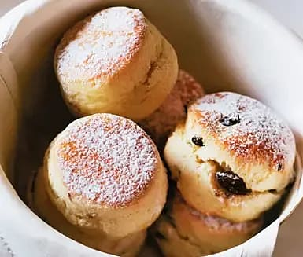

Engelska scones

Engelska scones är en riktig klassiker och med det här receptet bakar du härliga och smarriga scones med bland annat choklad och vispgrädde! Fabulöst och fantastiskt gott! Perfekt att lyxa till helgfrukosten med.
Ingredienser
- 4 dl vetemjöl
- 1 tsk salt
- 1 tsk bakpulver
- 1/2 dl hackad, mörk choklad eller russin
- 50 g rumsvarmt smör
- 1 1/2 dl vispgrädde
Gör så här
- Sätt ugnen på 225°C.
- Nyp ihop mjöl, salt, bakpulver och choklad eller russin med smöret.
- Tillsätt grädden och knåda snabbt ihop till en smidig deg.
- Platta ut degen till en 2 cm tjock platta och ta ut portionsstora rundlar med hjälp av mått eller glas.
- Lägg dem på en bakpappersklädd plåt. Pensla dem med grädde.
- Grädda mitt i ugnen ca 10 minuter, tills de fått fin färg. Servera nybakta. Pudra ev över florsocker.
Text och bild från ICA.se